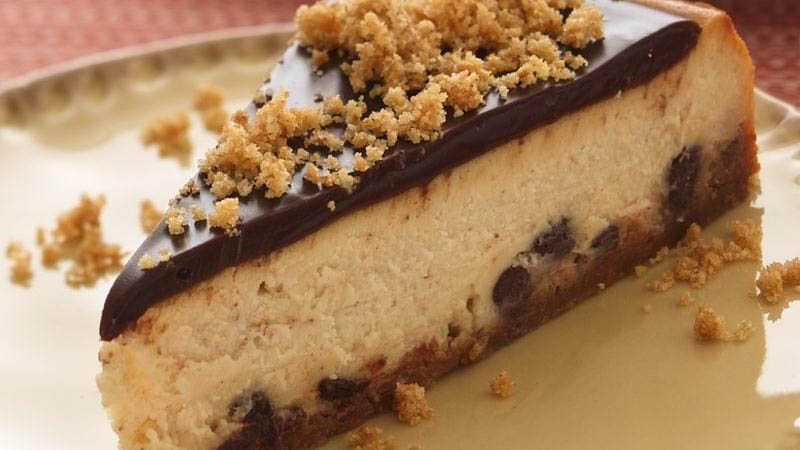

<!--
 Name:Neville Zou
 Student Id:
-->
<div class="pages">
<div data-page="projects" class="page no-toolbar no-navbar">
   <div class="page-content">
     <!--top header-->
      <div class="navbarpages">
         <div class="nav_left_logo"><a href="index.html"></a></div>
         <div class="nav_right_button">
		 <!--A link to Open Main Nav-->
            <a href="menu.html"></a>
			<!--A link to go back to Previous Page-->
            <a href="food-menu.html"></a>
         </div>
      </div>
	   <!--top header-->
      <div id="pages_maincontent">
         <h2 class="page_title">Our Recepie</h2><!-- the header information of the page -->
         <div class="post_single">
		 <!--Recipe Image And title-->
            <div class="featured_image">
               <!-- image tag for diplay image in browser-->
               <div class="post_title_single">
                  <h2>Brownie Ice Cream Cake</h2>
               </div>
               <div class="post_social">
                  <a href="#" data-popup=".popup-social" class="open-popup"></a>              
               </div>
            </div>
		<!--Recipe Image And title-->
		 <!--Recipe Detail-->
            <div class="page_content">
               <div class="entry">
                  <p>
                     Enjoy this mouth-watering cheesecake made with marshmallow creme and chocolate topping – perfect for a lavish dessert!
                  </p><!-- starts new paregraph-->
                  <ul class="simple_list"><!-- unorderlist tag-->
                     <li>Heat oven to 425°F. Spray 10-inch springform pan with cooking spray.</li><!--LIst items-->
                     <li>In small bowl, mix all crust ingredients. Remove 1/2 cup mixture for topping; set aside. Press remaining mixture evenly into bottom of pan. Bake 5 minutes or until crust is just turning deep golden around edge.</li>
                     <li>In large bowl, beat cream cheese with electric mixer on medium speed, stopping to scrape side occasionally, until smooth. Add brown sugar, marshmallow creme and vanilla, and beat until smooth. Add eggs, 1 at a time, beating 1 minute after each addition. Use rubber spatula to stir in cinnamon. Sprinkle 1 cup chocolate chips over crust. Pour batter over chips.</li>
                     <li> Bake cheesecake 15 minutes; reduce oven temperature to 225°F. Bake 55 minutes longer or until cheesecake is set around edge and center is almost set but just slightly wiggly. (Do not insert knife to test doneness because hole could cause cheesecake to crack.) Turn off oven, open oven door slightly and allow cheesecake to cool to room temperature. Remove from oven, cover loosely with foil and refrigerate at least 3 hours.</li>
                     <li>In 1-quart saucepan, heat 1 cup chocolate chips and the whipping cream over low heat, stirring occasionally, until chocolate chips are melted. Spread over cheesecake and sprinkle with reserved 1/2 cup crumbs.</li>
                     <li>Cover with foil and refrigerate cheesecake 1 hour or up to 48 hours. Run metal spatula along side of cheesecake to loosen and remove side of pan before serving. Store any leftovers covered in refrigerator.</li>
                  </ul>
               </div>
            </div>
		 <!--Recipe Detail-->
         </div>
      </div>
   </div>
</div>